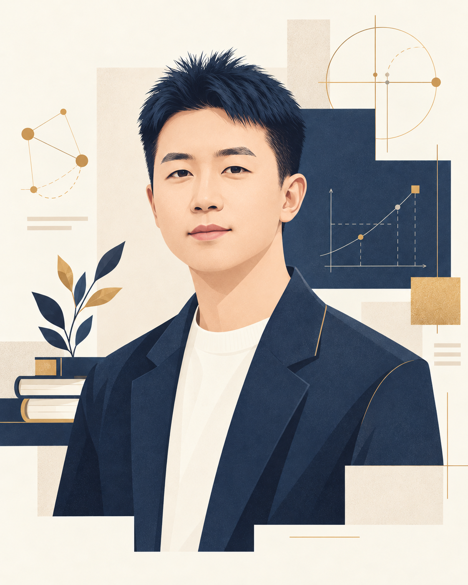
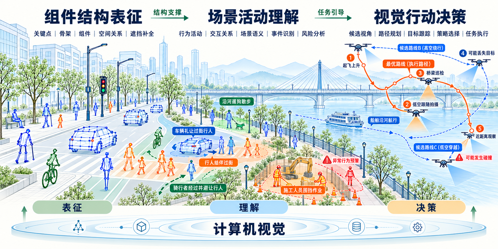

江西财经大学
讲师
江西财经大学 / 讲师 · 工学博士
以计算机视觉为基础，面向世界模型、低空经济与具身智能中的视觉问题，开展组件结构表征、场景活动理解与视觉行动决策研究。

讲师
工学博士
工学学士
围绕组件结构表征、场景活动理解与视觉行动决策，探索计算机视觉与世界模型、低空经济及具身智能的交叉研究。
三个方向沿“表征—理解—决策”展开：组件结构表征为理解物体与场景提供基础，场景活动理解为任务判断与行动选择提供语义依据；视觉行动决策根据任务目标组织观测与行动，并通过新的视觉信息更新结构表征和场景理解，形成相互支撑的研究体系。

从兴趣出发，在实践中学习研究方法，逐步尝试独立研究。
欢迎对计算机视觉与人工智能感兴趣的本科生联系交流。科研训练既需要知识积累，也离不开主动思考、动手实践和持续探索。通过循序渐进的指导和踏实投入，希望帮助同学们逐步掌握研究方法，培养独立思考与解决问题的能力。
计算机视觉的研究问题直观，应用场景丰富，例如定位物体的关键部位、识别图像中的目标，以及推断物体被遮挡的部分。同学们可以从论文阅读、算法复现和实验分析入手，逐步学习如何提出问题、设计方法和表达成果。课题组与多媒体智能处理江西省重点实验室、上海交通大学 BCMI 实验室保持密切合作，在姿态估计、图像分割、目标检测与多模态学习等方面形成了研究积累。
课题组采用梯次培养方式，将教师指导与团队协作相结合，帮助同学在具体课题中积累经验、逐步承担研究工作。培养安排会结合每位同学的课程、基础和研究进展，在基础学习、课题选择、算法复现、代码实现、实验分析与论文写作等环节提供持续指导。
学习课题所需的数学、机器学习与深度学习知识，养成良好的编程习惯。通过论文阅读、代码实践和小规模实验，理解研究问题，熟悉科研的基本过程。
参与课题协作，练习算法复现、实验实施与结果分析，学习任务推进、实验记录和问题交流。鼓励有条件的同学从大一开始积累基础，逐步参与团队研究与论文投稿。
在前期训练的基础上，逐步承担选题、实验设计、研究推进与论文写作等工作，争取在大二、大三阶段负责具体课题，形成学生一作成果。
科研能力需要持续积累，尽早开始能够为基础学习、实践探索和成果形成留出更充分的时间。希望同学在兼顾课程的基础上保持稳定投入，认真记录实验、主动交流进展，遇到困难及时讨论。具体安排可根据课程负担与课题进展共同商定。
科研训练的收获包括论文成果，也包括编程、文献阅读、实验分析、学术表达与团队协作能力的提升。课题组的学长学姐会分享科研经历，以及推免和升学准备经验，为后续学习与发展提供参考。
已有本科生在大三阶段取得 CCF A 类论文共同一作、CCF A 类论文学生一作及计算机视觉国际会议论文学生一作等成果；另有两项专利成果由大三学生担任学生一作。这些经历展示了同学们从参与协作到负责课题、逐步形成研究成果的成长过程。
每位同学的基础和成长节奏有所不同，研究探索与论文投稿也存在不确定性。培养安排会结合实际进展灵活调整，鼓励扎实积累，逐步形成适合自己的研究节奏。
有意申请的同学，欢迎发送邮件至 chen.bys@outlook.com，主题建议为“本科科研—姓名—学院专业年级”。请在邮件中介绍所在学院、专业和年级、编程与数学基础、感兴趣的研究问题，以及可持续投入科研的时间安排。
可随信附上个人简历、课程项目、代码链接或学习记录，也欢迎介绍已有的论文与竞赛经历。尚未确定选题的同学，可以先分享感兴趣的视觉问题和相关学习经历。如实介绍自己的兴趣、基础与时间安排即可，无需为初次联系准备过于复杂的材料。
欢迎通过推免或考研途径申请的同学联系交流。
欢迎对计算机视觉与人工智能研究感兴趣、计划通过推免或考研途径申请硕士研究生的同学联系交流。培养过程注重系统的科研训练，帮助同学在解决具体问题的过程中掌握研究方法，逐步具备独立开展研究的能力。
研究方向涵盖组件结构表征、场景活动理解与视觉行动决策。选题可从关键点与姿态估计、遮挡物体理解、弱监督学习、跨模态知识迁移及无人机视觉等研究积累出发，结合个人兴趣与基础，逐步凝练具有研究价值、适合深入探索的问题。
研究生培养以目标和成果为导向，围绕具体问题安排学习与实践，通过实验分析和阶段总结梳理进展、调整计划。培养方案会充分考虑个人基础，在基础训练、课题选择、算法复现、代码实现、实验分析与论文写作等环节提供指导，帮助同学逐步从完成具体任务走向自主研究。
系统阅读相关文献，理解问题背景、已有方法及其局限。通过算法复现熟悉代码与实验流程，逐步掌握实验设置的依据和结果分析的方法。
围绕具体问题提出研究假设、设计实验并持续推进，分析不同方法的效果及原因。注重主动沟通、实验记录、代码质量与学术诚信，保证研究过程规范、结论有据可查。
梳理研究问题、方法设计与实验结论，形成完整的研究工作。学习论文写作、投稿修改与学术交流，准确说明研究动机、主要贡献、实验依据及方法局限。
课题组通过与多媒体智能处理江西省重点实验室、上海交通大学 BCMI 实验室的密切合作，为同学开展研究、拓展学术视野和参与交流提供支持。除实验室基本补贴和学校各级奖励外，课题组还根据论文质量提供相应奖励，并在论文投稿、接收后安排带薪休假。
希望这些安排能够支持同学安心开展研究，兼顾学术成长与生活。课题组的学长学姐会分享就业、攻读博士和海外升学的经验。对于有意攻读博士的同学，将给予有力推荐，并积极协助申请海外联合培养及相关学术交流机会。
以往培养的研究生均取得了 CCF A 类论文、国家发明专利等科研成果。培养经历表明，在研一阶段逐步学会独立开展实验、持续推进课题，有助于形成扎实的研究积累，为后续科研、就业与继续深造打好基础。
培养过程中重视每位同学的长期发展，希望通过科研训练，逐步提升独立分析问题、解决问题和清晰表达观点的能力，为毕业后的就业或继续深造提供长久支持。
有意申请的同学，欢迎将个人简历发送至 chen.bys@outlook.com，主题建议为“硕士招生—姓名—入学年度—推免/考研”。请介绍本科院校与专业、申请途径、学习与项目经历、编程及科研基础、感兴趣的研究方向，以及希望交流的问题。
推免申请者可介绍学习成绩、专业排名及推免资格情况；考研申请者可介绍拟报考专业、备考进展，以及已公布的初试成绩或复试安排。材料可根据申请进度提供，也欢迎在准备阶段提前交流研究兴趣与申请计划。
如有代码、课程项目、论文阅读记录或研究成果，可随信提供材料或链接，便于了解你的学习与实践经历。也欢迎结合主页中感兴趣的论文，分享自己的理解和希望进一步探究的问题。
欢迎通过邮件交流研究兴趣与培养意向。推免接收、考研报考、复试和录取等事项，以学校当年的招生安排为准。
欢迎通过邮件交流研究问题与论文想法，也欢迎咨询本科生科研申请和硕士研究生招生事宜。来信请简要介绍个人背景与交流意向，便于有针对性地回复。